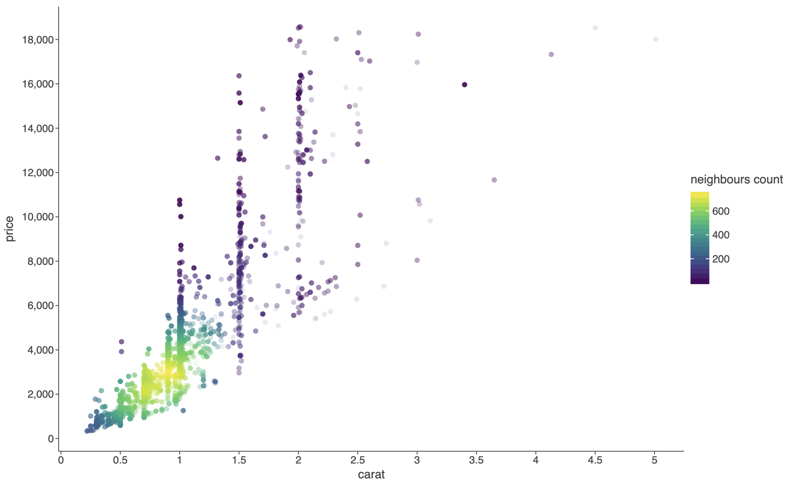
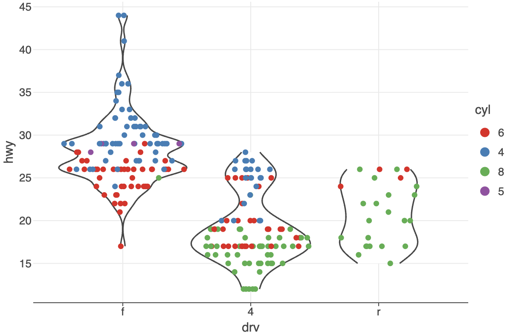
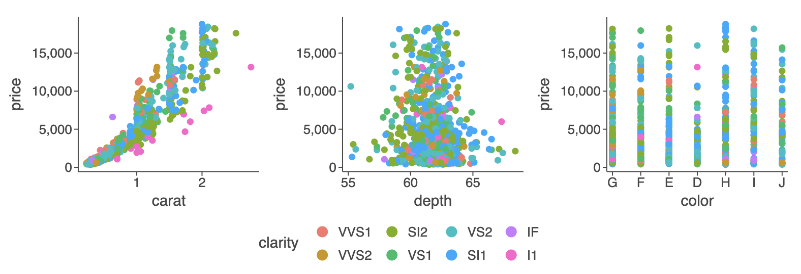
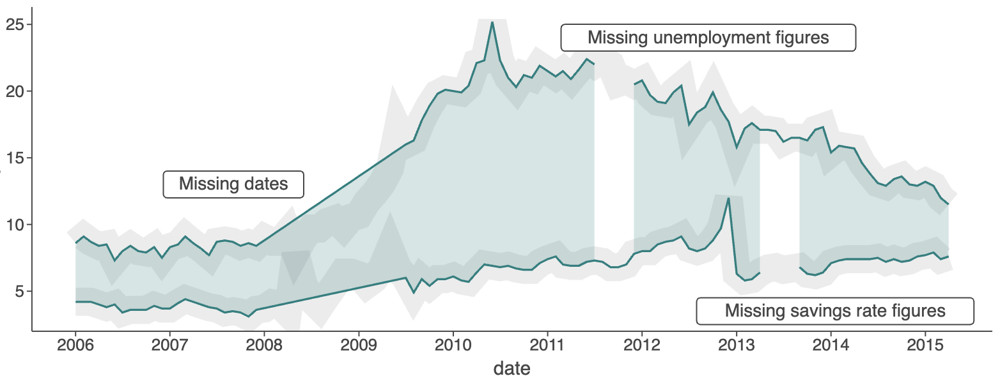

What Is New in 4.12.0
geomPointDensity()Geometry
See: example notebook.
Explicit
groupaesthetic now overrides default grouping behavior instead of combining with it
See: example notebook.
gggrid(): support for shared legends (parameterguides)
See: example notebook.
Better handling of missing values in
geomLine(),geomPath(),geomRibbon(), andgeomArea()
See: example notebook.
geomHistogram(): custom bin bounds (parameterbreaks)See: example notebook.
Legend automatically wraps to prevent overlap — up to 15 rows for vertical legends and 5 columns for horizontal ones
See: example notebook.
flavorStandard()resets the theme's default color schemeUse to override other flavors or make defaults explicit.
See: example notebook.
thememethods controlling legend justification:legendJustificationTop(),legendJustificationRight(),legendJustificationBottom(), andlegendJustificationLeft()See: example notebook.
ggtb(): AddedsizeZoominandsizeBasisparameters to control point size scaling behavior when zooming (works withgeomPointand related layers).See: example notebook.
And More
See CHANGELOG.md for a full list of changes.
Recent Updates in the Gallery


")


Change Log
See CHANGELOG.md for other changes and fixes.